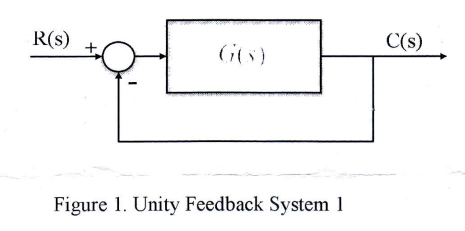

Given the unity feedback system of Figure 1, where $G(s)=\frac{K(s+2)(s+3)}{(s^2+2s+2)(s+4)(s+5)(s+6)}$, do the following:
Sketch the root locus.
Find the $j\omega$-axis crossing, and the gain, K, at the crossing.
Find all break away and break-in points.
Find angles of departure from the complex poles.

Problem 2 (Student Outcome : c(20%), e(10%))
Given unity feedback system has the following forward transfer function $G(s)=\frac{K}{s^2(s+4)(s+12)}$. Assume that you can use a second order approxtimation of the closed loop for the analysis of transient response.
Design a compensator to yield a closed loop step response 20.5% overshoot and a settling time of 3 seconds.
Explain why you select the type of compensator to use for solving problem 2.1.
Problem 3 (Student Outcome : c(20%), e(20%))
Consider an open loop transfer function $G(s)=\frac{10K(s+0.5)}{s^2(s+2)(s+10)}$.
Draw the Bode plot (magnitude and phase plot) of $G(s)$ if $K=1$.
Estimate the crossover frequency, phase margin, and gain margin based on your plot.